기상기사 (2003-03-16 기출문제)
1과목: 기상관측법
1. 항공기상 관측시 1000m 이하의 운저 고도를 측정하는 방법이다. 적당하지 않은 것은?
- 광선 투사기(ceiling light)의 이용
- 비행기 보고의 이용
- 자동 운고계의 이용
- 기상 위성의 이용
(정답률: 알수없음)

2. 기상현상 중의 연무(haze)현상은?
- 대기중의 빛의현상
- 대기중의 먼지현상
- 대기중의 안개현상
- 대기중의 물의현상
(정답률: 알수없음)
3. 기차 보정,온도 보정 및 중력 보정을 행한 기압치를 가리키는 용어가 아닌 것은?
- 관측소 기압
- 현지 기압
- 해면 기압
- 보정 기압
(정답률: 알수없음)
4. 고층 기상관측 시 직접 관측되지 않은 기상 요소는?
- 기온
- 노점온도
- 기압
- 풍속
(정답률: 알수없음)
5. 다음은 WMO(세계기상기구)에서 제정한 지면 상태를 나타내는 기호이다. 이중에서 얼어 있는 지면 상태를 나타내는 것은?
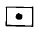
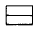
(정답률: 알수없음)
6. 대기 중 습도가 높을 때 작물과의 관계에 대한 설명 중 옳은 것은?
- 증산 작용이 활발해진다.
- 뿌리의 수분 흡수력이 커진다.
- 필요물질의 흡수 및 순환이 쇠퇴한다.
- 표피가 단단해진다.
(정답률: 알수없음)
7. 기상 레이다에서 전자파는 공간을 통과할 때 각종의 감쇠현상이 있다. 다음 중 파장 5㎝ 이상인 전자파의 경우 감쇠에 가장 많은 영향을 주는 것은?
- 산소
- 질소
- 탄산가스
- 수증기
(정답률: 알수없음)
8. 테트룬(Tetroon)의 설명 중 적절하지 못한 것은?
- 일정한 부피를 가진 기구이다.
- 주로 바람의 수직 구조를 관측하는데 사용된다.
- 일정한 고도에 도달되면 그 고도에 머문다.
- 추적에는 경위의나 레이다가 사용된다.
(정답률: 알수없음)
9. 소낙성 강수를 설명하는 다음 문항 중 옳지 않은 것은?
- 강수강도 30㎜/h 이상인 경우에 해당한다.
- 현상의 시작과 끝이 갑작스러운 경우에 해당한다.
- 강수 강도가 급격히 변화하는 경우에 해당한다.
- 강수 입자가 비교적 크며 대체로 대류성 구름에서 내린다.
(정답률: 알수없음)
10. 풍속이 정온(Calm)이라 함은 어느 때를 말하는가?
- 0.0 ㎧ 일 때
- 0.0 ㎧ 이상, 0.1㎧ 미만일 때
- 0.0 ㎧ 이상, 0.2 ㎧ 이하일 때
- 0.5 ㎧ 이하일 때
(정답률: 알수없음)
11. 안개비의 정의와 관련이 없는 것은?
- 강수량은 보통 1시간에 1㎜ 미만
- 보통 연속된 두꺼운 하층운에서 내린다.
- 직경은 0.5㎜ 미만
- 운고는 대단히 낮으며 지면에 까지 도달하면 안개로 되는 수가 많다.
(정답률: 알수없음)
12. 지상 기상 관측에 있어 관측시간 정각에 행하여야 하는 것은?
- 우량계
- 자기 온도계 및 자기 습도계
- 건구 온도계
- 수은 기압계
(정답률: 알수없음)
13. 대기의 전기 현상을 나타내는 기호 설명이다. 관계가 서로 틀린 것은?
- 뇌전 -
- 천둥 -
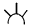
- 극광 -
- 센트에르모의 불 -
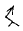
(정답률: 알수없음)
14. 연무(haze)를 통하여 멀리 있는 밝은 물체를 보면 어떤색을 띠는가?
- 노랗거나 붉은색
- 푸른색
- 푸르스름한 회색
- 연록색
(정답률: 70%)
15. 다음 중 현재의 증기압을 포화증기압으로 하는 온도는?
- 상당온도
- 노점온도
- 건구온도
- 습구온도
(정답률: 60%)
16. 자기 온도계의 감온부(感溫部)에 주로 사용되는 물질은?
- 공기
- 수은
- 알코올
- 쌍금속
(정답률: 46%)
17. 알베도 메터(albedo meter)는 무엇을 측정하는 기기인가?
- 표면의 장력(surface tension)
- 표면의 흡수력(absorbing power)
- 표면의 거칠기(roughness)
- 표면의 반사력(reflecting power)
(정답률: 알수없음)
18. 다음은 수은(Hg)을 설명한 것이다. 적당치 않은 것은?
- 융해점은 약 -89℃이다.
- 밀도는 약 13.6 g/cm3이다.
- 기압계에 사용될 수 있다.
- 온도계에 사용될 수 있다.
(정답률: 알수없음)
19. 다음 중 고층운(CH)이 아닌 것은?
- Cb
- Ci
- Cc
- Cs
(정답률: 알수없음)
20. 캄벨스톡스 기록계(Cambell Stokes recorder)의 설명 중 적당치 않은 것은?
- 윗홈에 맞는 자기지는 11월부터 다음에 2월 사이에 사용된다.
- 아랫홈에 맞는 자기지는 5월부터 8월까지 사용된다.
- 중간홈에 맞는 자기지는 3.4.9월 그리고 10월에 사용된다.
- 전천 일사량을 기록하는 기기이다.
(정답률: 알수없음)
2과목: 대기열역학
21. 같은 기압과 기온에서 같은 체적의 건조공기와 습윤 공기의 질량은 다르다. 다음 중 그 이유로서 맞는 것은?
- 건조공기의 질량이 수증기보다 크기 때문이다
- 수증기의 질량이 건조공기보다 크기 때문이다.
- 습윤공기가 건조 공기보다 밀도가 큰 경우가 많기 때문이다
- 건조공기에는 수증기를 더 많이 포함시킬 수 있기 때문이다.
(정답률: 알수없음)
22. 공기의 밀도가 1.2 x 10-3g/cm3,중력 가속도가 980㎝/sec2일 때, 기압차가 1 hPa인 대기층의 층후(thickness)는 얼마인가?
- 약 0.02m
- 약 0.3m
- 약 8.5m
- 약 20.0m
(정답률: 알수없음)
23. 어느 포화되지 않은 공기중에 수증기를 첨가할 때 그 값이 증가하지 않는 것은?
- 기온
- 이슬점온도
- 습구온도
- 가온도
(정답률: 알수없음)
24. 대류 응결고도(CCL)는 상태곡선과 다음 중 어느 것이 마주치는 고도인가?
- 건조단열선
- 등온혼합비선
- 위습윤단열선
- 등압선
(정답률: 알수없음)
25. 비열용량(Specific heat capacity)의 차원이 옳은 것은?
- [ML2T-2]
- [ML-1T-2]
- [L2T-2θ -1]
- [L2T2θ -1]
(정답률: 알수없음)
26. 대기중의 에너지는 위치에너지, 내부에너지, 운동에너지로 크게 나누어 생각할 수 있는데 내부에너지가 증가하면 위치에너지는?
- 증가한다.
- 점점 감소한다.
- 없어진다.
- 변환한다.
(정답률: 알수없음)
27. parcel method에서 가정한 사실은?
- 보상운동(compensating motion)
- 수평혼합(horizontal mixing)
- 역학적 평형(dynamical equilibrium)
- 연직발산(vertical divergence)
(정답률: 알수없음)
28. 건조공기의 기체상수를 Rd,수증기의 기체상수를 Rv라고 하면 Rd/Rv는 약 얼마인가?
- 0.355
- 0.427
- 0.622
- 1.608
(정답률: 알수없음)
29. "대기가 작용하는 압력은 지표면에서 가장 크고 고도증가에 따라 감소된다"는 다음 중 어느 것인가?
- 상태방정식
- 열역학 제1법칙
- 열역학 제2법칙
- 정역학 법칙
(정답률: 알수없음)
30. 0℃ 1기압에서 100cm3인 공기괴가 있다. 이 공기괴가 50℃,1기압일 때의 체적은?
- 약 86cm3
- 약 118cm3
- 약 860cm3
- 약 1180cm3
(정답률: 알수없음)
31. 대기의 압력이 1000hPa,수증기만의 분압이 16hPa인 공기 덩이의 혼합비(mixing ratio)는 약 얼마인가?
- 약 10 g/㎏
- 약 15 g/㎏
- 약 20 g/㎏
- 약 25 g/㎏
(정답률: 알수없음)
32. 다음 중 공기층이 모두 포화될 때까지 상승한 후 공기층이 갖게 되는 안정도는?
- 순압 불안정도
- 잠재 불안정도
- 경압 불안정도
- 대류 불안정도
(정답률: 알수없음)
33. 다음 중 등온위선이 단면도에서 가장 조밀한 곳은?
- 고기압 중심부
- 대류불안정대
- 전선대
- 기단 중심부
(정답률: 알수없음)
34. 모든 기체는 등온 등압에서 같은 부피 중에 들어있는 그 분자의 수가 같다는 것은?
- 아보가드로의 법칙
- 보일의 법칙
- 샬의 법칙
- 달톤의 법칙
(정답률: 60%)
35. 온위(potential temperature) θ를 구하는 옳은 식은? (단, k는 R/CP 이다.)
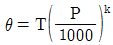
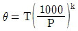
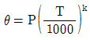
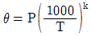
(정답률: 알수없음)
36. 1000hPa, 30℃인 건조공기의 비적(specific volume)은?
- 968.2㎖/g
- 950.8㎖/g
- 872.3㎖/g
- 843.5㎖/g
(정답률: 알수없음)
37. 상태 방정식이란?
- 기체의 압력, 부피, 온도 사이의 관계식이다.
- 기체의 질량, 부피, 온도 사이의 관계식이다.
- 기체의 밀도, 부피, 온도 사이의 관계식이다.
- 기체의 압력, 점성, 온도 사이의 관계식이다.
(정답률: 알수없음)
38. 열역학선도에서 온위가 일정한 선은?
- 건조단열선
- 포화단열선
- 포화혼합비선
- 등비습선
(정답률: 알수없음)
39. 1000hPa, 0℃에서 수증기압이 6.11hPa 인 습윤공기의 가온도는? (단, 이 때 건조공기에 대한 수증기의 분자량비(ε)는 0.622 이다.)
- 273.8 K
- 1.8℃
- -1.8℃
- 270.2 K
(정답률: 알수없음)
40. 온도에 대한 포화증기압의 변화율을 나타내는 것은?
- Poisson's equation
- Hydrostatic equation
- Free-energy equation
- Clausius-Clapeyron equation
(정답률: 알수없음)
3과목: 대기운동학
41. 구면좌표계에서의 운동 방정식을 대규모 공기의 운동에 적용하면 수직가속도 성분과 코리올리항을 무시할 수 있는데 이 때 얻을 수 있는 기본 방정식은?
- 연속 방정식
- 상태 방정식
- 에너지 방정식
- 정역학 방정식
(정답률: 알수없음)
42. 임의의 점을 원점으로 한 풍속성분(u,v)을 Tayler급수로 전개하여 2차원 운동만 고려할 때 각 성분운동과 관계없는 것은?
- 평행(Translation)
- 변형(Deformation)
- 회전(rotation)
- 마찰(Friction)
(정답률: 알수없음)
43. 대규모적인 대기운동에서 전형적인 연직속도(typical vertical velocity)의 대략값은?
- 1 ∼ 10㎝/sec
- 20 ∼ 30㎝/sec
- 35 ∼ 45㎝/sec
- 50 ∼ 60㎝/sec
(정답률: 알수없음)
44. 같은 크기의 기압경도를 이루고 있는 경도풍 중 가장 큰 것은?
- 고기압성 곡률
- 저기압성 곡률
- 직선
- 싸인(sine) 파동의 변곡점
(정답률: 알수없음)
45. Inter-Tropical Convergence Zone과 관계가 가장 적은 것은?
- 무역풍과 편서풍이 만나는 지역이다.
- 많은 강우량이 있다.
- 연직속도가 비교적 크다.
- 발달지역이 계절에 따라 다르다.
(정답률: 알수없음)
46. 적도지방의 하층에서는 주로 어떠한 방향의 바람이 부는가?
- 서풍
- 동풍
- 북풍
- 남풍
(정답률: 알수없음)
47. 중위도 지방에서의 Scale height(스케일 고도)는 얼마인가?
- 약 1㎞
- 약 10㎞
- 약 100㎞
- 약 500㎞
(정답률: 알수없음)
48. 순압성이 가장 강한 대기는 등압면(isobaric surface)과 등비부피면(isostere)이 이루는 각도가 어느 때인가?
- 0도
- 10도
- 30도
- 45도
(정답률: 알수없음)
49. 질량이 100g의 물체가 해면에서 10m 높이에서 갖게 될지오포텐샬은? (단, 지구의 중력은 9.8㎳-2로 가정)
- 0.98m2/sec2
- 9.8m2/sec2
- 98m2/sec2
- 9800m2/sec2
(정답률: 알수없음)
50. 지균풍의 수직 시어(shear)와 풍향이 같은 바람은?
- 온도풍
- 변압풍
- 경도풍
- 관성풍
(정답률: 알수없음)
51. 운동하고 있는 물체와 마찰의 관계 중 틀린 것은?
- 마찰력의 방향은 운동방향의 반대이다.
- 마찰력은 운동속도에 반비례한다.
- 마찰력이 클수록 운동속도는 감소한다.
- 마찰력은 운동하고 있는 물체의 넓이에 비례한다.
(정답률: 알수없음)
52. 지표면 부근의 상태를 나타낸 일기도에서 바람은 다음과 같은 성질을 가지고 있다.틀린 것은?
- 북반구에서 왼쪽에 저기압을 두고 불어간다.
- 등압선 간격이 좁은 곳에서는 바람이 강하다.
- 상층의 바람보다 일반적으로 매우 강하다.
- 공기운동의 연직방향의 속도는 수평방향의 속도보다 매우 작다.
(정답률: 알수없음)
53. 동서대칭 순환(zonally symmetric circulation)을 생각할 때 열,수분,운동량을 수송하는데 중요한 역할을 하는 속도 성분은?
- 동서와 연직
- 동서와 남북
- 남북과 연직
- 남북과 연직과 수평
(정답률: 알수없음)
54. 층후(Thi ckness)는 그 층사이에서 다음 중 어느 것의 함수인가?
- 기압
- 평균기온
- 고도
- 수증기압
(정답률: 100%)
55. 서쪽으로 10m/sec의 속도로 움직이는 물체에 작용하는 연직방향의 전향가속도(Coriolis force)의 크기는? (단, 위도 15° N에서 f(coriolis parameter) = 10-4/sec로 가정한다.)
- 아래쪽으로 10-3m/sec2
- 윗쪽으로 10-3m/sec2
- 0 m/sec2
- 윗쪽으로 10-2m/sec2
(정답률: 알수없음)
56. 다음 중 등고선 간격이 같을 때 옳바른 관계를 나타낸 것은?
- 저기압성 경도풍 > 지균풍 > 고기압성 경도풍
- 지균풍 > 고기압성 경도풍 > 저기압성 경도풍
- 고기압성 경도풍 > 지균풍 > 저기압성 경도풍
- 저기압성 경도풍 > 고기압성 경도풍 > 지균풍
(정답률: 알수없음)
57. 상층일기도에서 기압골과 능의 축이 남서쪽에서 북동쪽으로 기울어져 있다. 순각운동량은 어떻게 운송되겠는가?
- 남쪽에서 북쪽
- 북쪽에서 남쪽
- 동쪽에서 서쪽
- 서쪽에서 동쪽
(정답률: 60%)
58. 열대 교란인 경우, 로스비 수의 범위는?
- 0 - 0.1
- 0.1 - 1
- 1 - 10
- 10 - 100
(정답률: 알수없음)
59. 로스비파(Rossby Wave)의 이론에 따라 전진파인 경우는? (단, U : 대상류(Zonal flow),C : 파의 속도)
- U > 0 > C
- U > C = 0
- U > C > 0
- U = C
(정답률: 알수없음)
60. 북반구 500h㎩면에서 등고선이 넓어지는 지역에서는 500h㎩ 지균풍이 어떻게 변화하는가?
- 풍속이 늦어지고 등고선이 높은쪽으로 돈다.
- 풍속이 늦어지고 등고선이 낮은쪽으로 돈다.
- 풍속이 빨라지고 등고선이 높은쪽으로 돈다.
- 풍속이 빨라지고 등고선이 낮은쪽으로 돈다.
(정답률: 알수없음)
4과목: 기후학
61. 온도가 낮아질수록 방출되는 복사의 최대 에너지 파장이 점점 길어짐을 나타내는 법칙은?
- Reyleigh의 법칙
- Plank의 법칙
- Stefan Boltzmann의 법칙
- Wien의 법칙
(정답률: 알수없음)
62. 다음 중 기후분류의 근거가 될 수 없는 것은?
- 대기작용
- 식생분포
- 물수지
- 인구밀도
(정답률: 알수없음)
63. 대기의 온실효과(greenhouse effect)를 나타내는 주된 역할을 하는 공기 성분은?
- 산소
- 질소
- 일산화탄소
- 수증기
(정답률: 알수없음)
64. 다음 중 에너지의 수평 수송이 가장 큰 곳은?
- 적도
- 북위10도
- 북위30도
- 북위60도
(정답률: 50%)
65. 해풍이 시작하는 시간으로 다음 중 가장 타당한 것은?
- 자정경
- 새벽 5시경
- 일출 후 1∼2시간 후
- 오후 15시경
(정답률: 알수없음)
66. 다음은 우리나라의 국지풍에 관한 것이다. 틀린 것은?
- 샛바람 - 동풍
- 하늬바람 - 서풍
- 마파람 - 남풍
- 골바람 - 북풍
(정답률: 알수없음)
67. 1년 중에 강수량의 극대와 극소가 각각 2회씩 나타나며 극대는 춘분과 추분경에, 극소는 하지와 동지경에 나타나는 강우형은?
- 온대강우형
- 혼성식강우형
- 적도강우형
- 계절풍강우형
(정답률: 알수없음)
68. 우리 나라의 장마전선을 형성하게 되는 기단들 중 가장 타당한 것은?
- cP와 mP
- cP와 mT
- mP와 mT
- mP와 mP
(정답률: 알수없음)
69. 오존(O3)이 가장 많이 분포하고 있는 층은 지상 몇 ㎞인가?
- 10 ∼ 20㎞
- 20 ∼ 30㎞
- 30 ∼ 40㎞
- 50 ∼ 60㎞
(정답률: 알수없음)
70. Hythergraph는 무엇에 의하여 기후를 구분하는가?
- 바람, 온도
- 강수량, 습도
- 바람, 습도
- 기온, 강수량
(정답률: 60%)
71. 태풍은 주로 어느 구역에서 발생하는가?
- 적도지방의 대륙서해안
- 열대지방의 해역
- 열대지방의 대륙내부
- 적도상의 해역
(정답률: 알수없음)
72. 열대지방에서 대류권계면의 고도는 얼마인가?
- 약 8㎞
- 약 12㎞
- 약 17㎞
- 약 25㎞
(정답률: 알수없음)
73. 다음 중 유럽에서 진행되었던 제 4빙기 동안에 나타났던 빙기의 명칭이 아닌 것은?
- 귄쯔(Gunz)
- 민델(Mindel)
- 리스(Riss)
- 네브라스칸(Nebraskan)
(정답률: 알수없음)
74. 맑은날 바람이 불고 있는 실외에 있을 때에 불쾌지수는 DI = 0.72(건구온도+습구온도)-7.2√V +2.6J+40.6으로 정하고 있다. 여기서 J가 표시하는 것은?
- 풍속
- 일사량
- 강수량
- 평균기온
(정답률: 알수없음)
75. 쾨펜(Kӧppen)은 기후대를 A, B, C, D, E의 5개로 대별했다. 그 중 무수목기후(無樹木氣候)는?
- A와 B
- B와 C
- B와 E
- B와 D
(정답률: 알수없음)
76. 다음은 어떤 기후요소의 일변화를 그린 것이다. A가 상층의 값, B가 지상의 값이라고 할 때 어떤 기후요소의 일변화를 나타낸 것인가?
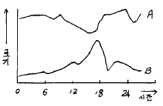
- 기온
- 습도
- 풍속
- 기압
(정답률: 알수없음)
77. 구름관측으로는 운량,운형,운고,운속등이 있다. 이중 운량은 몇계급으로 나누는가?
- 10계급
- 11계급
- 12계급
- 9계급
(정답률: 알수없음)
78. 동기후학(dynamic climate)의 내용에 속하지 않는 것은?
- 저기압
- 기단
- 전선
- 평균기온
(정답률: 알수없음)
79. 우리 나라의 연평균 기온의 분포는 다음 중 어느 값에 속하는가?
- 1℃ ∼ 10℃
- 4℃ ∼ 15℃
- 14℃ ∼ 26℃
- 21℃ ∼ 30℃
(정답률: 알수없음)
80. 기온이 10℃일 때 10m/sec의 바람이 불면 사람이 느끼는 온도는 무풍시의 몇 도에 해당하는가?
- 5℃ 높은 온도인 15℃
- 같은 온도인 10℃
- 5℃ 낮은 온도인 5℃
- 10℃ 낮은 온도인 0℃
(정답률: 알수없음)
5과목: 일기분석 및 예보론
81. 상태곡선의 기온 감율이 건조단열 감율보다 클 때는 무엇인가?
- 절대안정
- 절대 불안정
- 조건부 안정
- 잠재 불안정
(정답률: 82%)
82. 다음 중 태풍의 에너지 원천은?
- 하강기류
- 수증기의 응결열
- 마찰
- 해수의 기화열
(정답률: 알수없음)
83. 두루말이 구름(roll cloud)이 생성되는 가장 적당한 곳은?
- 분지위
- 산 또는 언덕위
- 찬 수면위
- 따뜻한 바다위
(정답률: 80%)
84. 열대저기압과 온대저기압을 구분하는 가장 특징적인 요소는?
- 기온
- 기압
- 전선
- 바람
(정답률: 알수없음)
85. 동서지수(東西指數)가 클 때에 나타나는 현상은?
- 남북의 기류교환이 크다.
- 편동풍이 강하다.
- 편동풍이 약하다.
- 편서풍이 강하다.
(정답률: 알수없음)
86. cyclolysis란 말은?
- 저기압의 정지상태를 말한다.
- 온대성 저기압을 말한다.
- 저기압의 쇠약과정을 말한다.
- 저기압의 발달과정을 말한다.
(정답률: 알수없음)
87. Richardson's number가 풍속의 고도 경도에 대해 가지는 다음 관계 중 맞는 것은?
- 풍속의 고도경도에 정비례 한다.
- 풍속의 고도경도에 반비례 한다.
- 풍속의 고도경도의 제곱에 정비례 한다.
- 풍속의 고도경도의 제곱에 반비례 한다.
(정답률: 알수없음)
88. 우적이 커지면 낙하속도가 증가하고, 낙하속도가 커지면 우적은 분열된다. 우적의 분열 낙하속도는 약 얼마인가?
- 8m/sec
- 30㎝/sec
- 30m/sec
- 1㎝/sec
(정답률: 알수없음)
89. 10종 운형 기호 중에서 적운을 나타내는 것은?
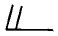
(정답률: 알수없음)
90. 우리나라에 영향을 주는 고기압의 특성에 관한 설명으로 올바르지 못한 것은?
- 북태평양 고기압은 고온다습하며, 여름철의 무더운 날씨를 만든다.
- 오호츠크해 고기압은 동해안지방의 고온현상을 일으킨다.
- 시베리아 고기압은 겨울철의 춥고 건조한 날씨를 만든다.
- 이동성 고기압의 영향을 받으면 봄에는 따뜻한 날씨, 가을에는 맑은 날씨가 된다.
(정답률: 알수없음)
91. 에너지의 복사력이 최대가 되는 파장은 물체의 절대온도에 역반비례한다. 이 이론은 누구의 법칙인가?
- 키르호프(Kirchhoff)
- 비인(Wien)
- 스테판 볼즈만(Stefan-Boltzmann)
- 플랑크(Plank)
(정답률: 알수없음)
92. 종관규모 운동에서 수직 속도의 대략적 크기는?
- 1cm sec-1
- 10cm sec-1
- 10-2cm sec-1
- 102cm sec-1
(정답률: 50%)
93. 수치예보 자료를 이용한 통계적 예보기법 가운데 하나인 MOS(Model Output Statistics)에 관한 설명중 적절하지 못한 것은?
- 관측자료로 만든 예보식에 수치예보자료를 적용하여 예보한다.
- 수치예보 모델 자체의 bias를 제거하여 예보한다.
- 수치예보 모델이 교체되면, 새로 예보식을 개발해야한다.
- 수치예보자료로 만든 예보식에 수치예보자료를 적용하여 예보한다.
(정답률: 알수없음)
94. 표준대기에 있어서의 850hPa 등압면 고도는?
- 1500 gpm
- 3000 gpm
- 5460 gpm
- 9000 gpm
(정답률: 84%)
95. 기상전보식에 보고되는 현재 일기(ww)는 어느 기간의 일기상태인가?
- 관측시각 및 관측시각전 10분내
- 관측시각
- 관측시각 및 관측시각전 1시간내
- 관측시각으로부터 30분내
(정답률: 알수없음)
96. 지상일기도에서 동서로 뻗어난 전선은?
- 정체전선
- 폐색전선
- 온난전선
- 한냉전선
(정답률: 알수없음)
97. 한냉한 기류가 남하할 때 주로 나타나는 구름은?
- 적운계 구름
- 층운계 구름
- 적운계와 층운계 구름이 공존
- 상층운
(정답률: 알수없음)
98. 제트기류에 관한 설명이다. 올바르지 않은 것은?
- 대류권과 성층권 경계부근에 위치하며, 출현 고도의 높이는 여름철에 높고 겨울철에 낮다.
- 제트기류는 대기의 습도 차이로 발생하며 사행(蛇行)한다.
- 북위 30도 부근 고도 약 12km에 나타나는 아열대 제트기류(subtropical jet)와, 북위 40도 부근 고도 약 9km에 나타나는 한대 제트기류(polar jet)가 있다.
- 제트기류의 북쪽에서는 저기압성 회전, 남쪽에서는 고기압성 순환이 일어난다.
(정답률: 알수없음)
99. 다음 그림은 고층 관측자료의 기입법이다. 여기서 숫자 5.0은 무엇을 의미하는가?
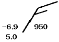
- 기온
- 노점온도
- 습수(기온-노점온도)
- 고도
(정답률: 알수없음)
100. 수증기가 구름입자로 응결할 때 흡습성 입자나 핵위에서 일어난다. 이 때의 흡습성 있는 핵을 무엇이라 하는가?
- 응결핵
- 빙정핵
- 포착핵
- 결빙핵
(정답률: 알수없음)